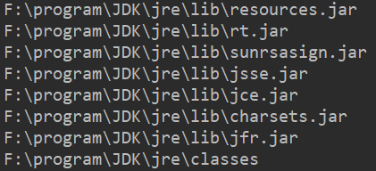
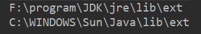
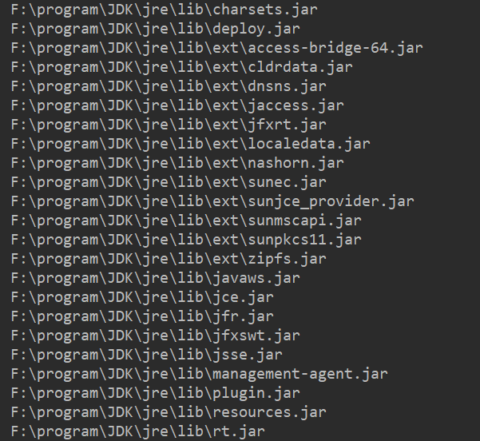
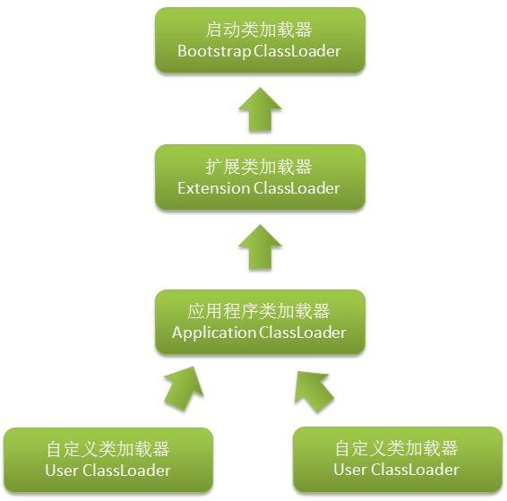
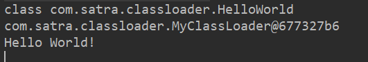

类加载器介绍
类加载器负责将class文件加载到内存中，并为之生成对应的java.lang.Class对象。对于任意一个类，都需要加载它的类加载器和这个类本身来确定该类在JVM中唯一性，也就是说，同一个class文件用两个不同的类加载器加载并创建两个java.lang.Class对象，即使两个对象来源自同一个class文件，它们也是不相等的，这里“相等”包括Class对象的equals()方法、isAssignableFrom()方法、isInstance()方法，也包括使用instanceof关键字做对象所属关系判定情况。
类加载器分类
虚拟机提供了3种类加载器，启动（Bootstrap）类加载器、扩展（Extension）类加载器、应用程序（Application）类加载器（也称应用类加载器）
Bootstrap ClassLoader
该类加载器没有父类加载器，它负责加载虚拟机的核心类库。Bootstrap ClassLoader加载器用于在启动JVM时加载类，以使JVM能正常工作，因而它是用Native（c++）代码实现的，最早被创建出来，处于最底层。它并没有继承java.lang.ClassLoader类。
我们可以来看下Bootstrap ClassLoader加载了哪些类，查看Bootstrap ClassLoader加载的类可以通过System.getProperty(“sun.boot.class.path”)看到：
1
2
3
4
5
6
| public class ClassLoaderTest {
public static void main(String[] args) {
String path = System.getProperty("sun.boot.class.path");
Arrays.asList(path.split(";")).forEach(System.out::println);
}
}
|
结果：

Extension ClassLoader
该类加载器的父类加载器是根类加载器。它从java.ext.dirs系统属性所指定的目录获取加载类库或从JDK的安装目录的jre\lib\ext子目录下加载类库。如果把jar放到这个目录下，也会自动用扩展类加载器加载。扩展类加载器是java类，是java.lang.ClassLoader类的子类。

Application ClassLoader
应用类加载器它的父类加载器是扩展类加载器，它将加载CLASSPATH中配置的目录和jar文件，它是用户自定义类加载器的默认父类加载器，系统类加载器是java类，是java.lang.ClassLoader类的子类。

类加载器之间的关系可用如图表示：

自定义类加载器
用户可以自定义类加载器，自定义类加载器只需要继承java.lang.ClassLoader，重写父类的findClass方法即可完成自定义类加载器的编写。
我们自己动手写一个类加载器，加载位于D盘根目录下的类：
1
2
3
4
5
6
7
8
9
10
11
12
13
14
15
16
17
18
19
20
21
22
23
24
25
26
27
28
29
30
31
32
33
34
35
36
37
38
| public class MyClassLoader extends ClassLoader {
private final String dir = "D:/";
@Override
protected Class<?> findClass(String name) throws ClassNotFoundException {
String className = name.replace(".", "/");
File classFile = new File(dir, className + ".class");
if (!classFile.exists()) {
throw new ClassNotFoundException();
}
byte[] classBytes = loadClassBytes(classFile);
if (classBytes == null || classBytes.length == 0) {
throw new ClassNotFoundException();
}
return this.defineClass(name, classBytes, 0, classBytes.length);
}
private byte[] loadClassBytes(File classFile) {
try (ByteArrayOutputStream bout = new ByteArrayOutputStream();
FileInputStream fin = new FileInputStream(classFile)) {
byte[] buffer = new byte[1024];
int len;
while ((len = fin.read(buffer)) != -1) {
bout.write(buffer, 0, len);
}
bout.flush();
return bout.toByteArray();
} catch (IOException e) {
e.printStackTrace();
}
return null;
}
}
|
新建一个HelloWorld类编译后放在D盘下：
1
2
3
4
5
| public class HelloWorld {
public String hello() {
return "Hello World!";
}
}
|
测试我们的类加载器：
1
2
3
4
5
6
7
8
9
10
11
12
13
| public class ClassLoaderTest {
public static void main(String[] args) throws ClassNotFoundException, IllegalAccessException, InstantiationException, NoSuchMethodException, InvocationTargetException {
MyClassLoader classLoader = new MyClassLoader();
Class<?> clazz = classLoader.loadClass("com.satra.classloader.HelloWorld");
System.out.println(clazz);
System.out.println(clazz.getClassLoader());
Object obj = clazz.newInstance();
Method method = clazz.getMethod("hello", null);
Object o = method.invoke(obj, null);
System.out.println(o);
}
}
|
输出结果：

类加载器双亲委派模型
前面我们说过，同一个class文件用两个不同的类加载器加载并创建两个java.lang.Class对象，即使两个对象来源自同一个class文件，它们也是不相等的。例如当我们自定义的类加载器加载了java.lang包中的String类，这样会造成内存中存在两个String的Class对象，而这两个Class对象的实例对象的eques会不相等，对虚拟机的稳定运行造成危害。所以虚拟机定义了双亲委派模型来解决这个问题。
双亲委派模型是指：某个特定的类加载器在接到加载类的请求时，首先将加载任务委托给父类加载器，依次递归，如果父类加载器可以完成类加载任务，就成功返回；只有父类加载器无法完成此加载任务时，才自己去加载。
我们可以看下JDK类加载器源码的实现：
1
2
3
4
5
6
7
8
9
10
11
12
13
14
15
16
17
18
19
20
21
22
23
24
25
26
27
28
29
30
31
32
33
| protected Class<?> loadClass(String name, boolean resolve)
throws ClassNotFoundException
{
synchronized (getClassLoadingLock(name)) {
Class<?> c = findLoadedClass(name);
if (c == null) {
long t0 = System.nanoTime();
try {
if (parent != null) {
c = parent.loadClass(name, false);
} else {
c = findBootstrapClassOrNull(name);
}
} catch (ClassNotFoundException e) {
}
if (c == null) {
long t1 = System.nanoTime();
c = findClass(name);
sun.misc.PerfCounter.getParentDelegationTime().addTime(t1 - t0);
sun.misc.PerfCounter.getFindClassTime().addElapsedTimeFrom(t1);
sun.misc.PerfCounter.getFindClasses().increment();
}
}
if (resolve) {
resolveClass(c);
}
return c;
}
}
|
参考文献
《深入理解Java虚拟机:JVM高级特性与最佳实践》 周志明著